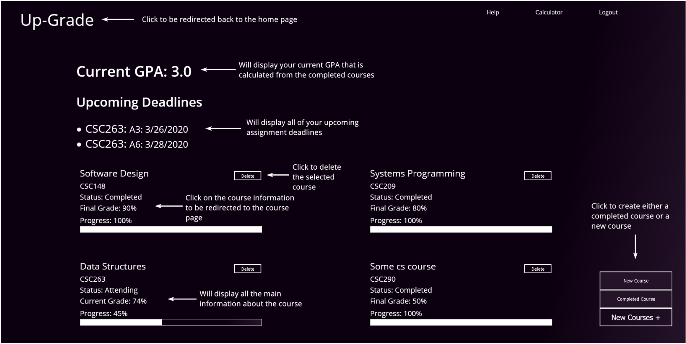

UpGrade Website and Mobile Application
This website was built as a group project in a Software Development course, and is composed of React, Firebase, and the app built on Java through Android Studio. The website is an application intended to help students understand, anticipate and maintain their grade point averages across their courses. The intention was primarily for students who did not have available electronic records of their assignments provided by their professors, and could serve to supplement their university's systems in these situations. As this was constructed for University of Toronto students, it uses their GPA model, but could also be easily altered for use at other universities.
and